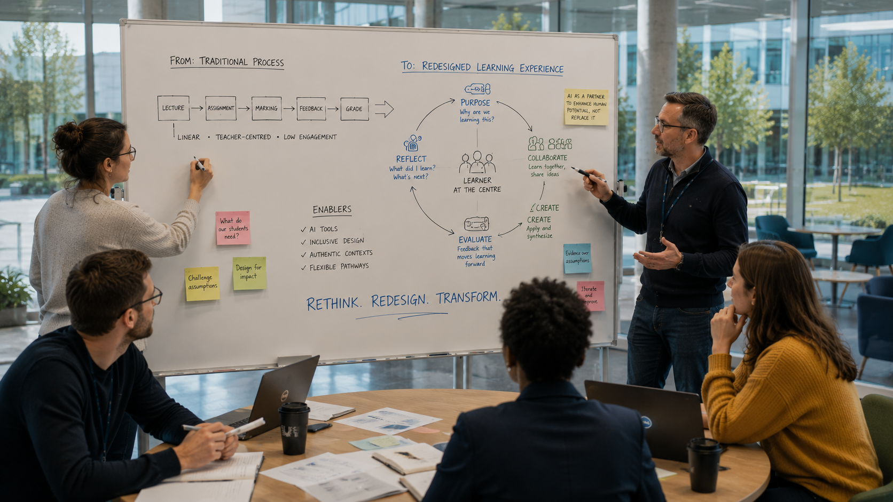
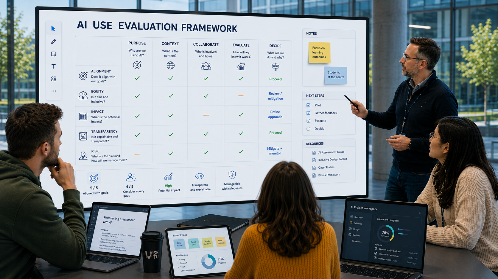
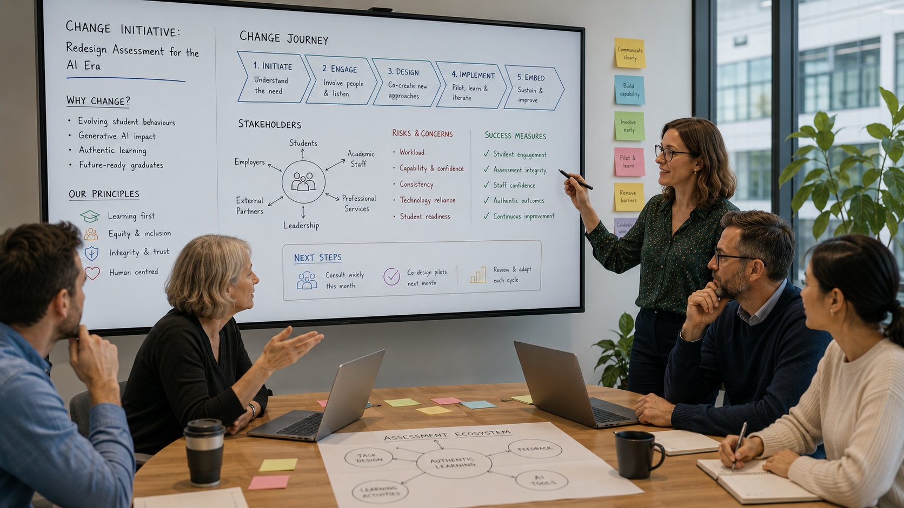
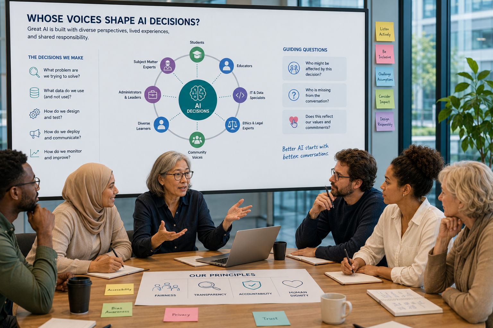
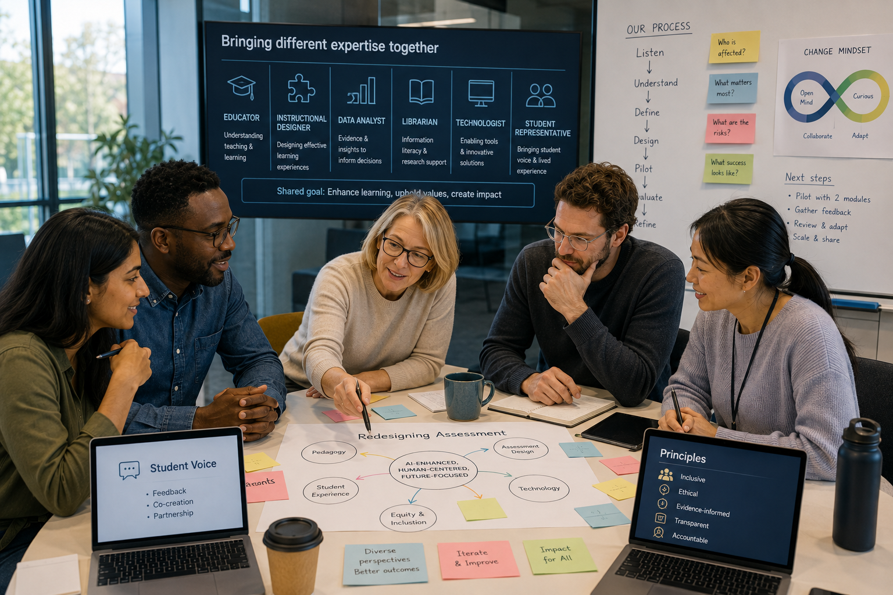
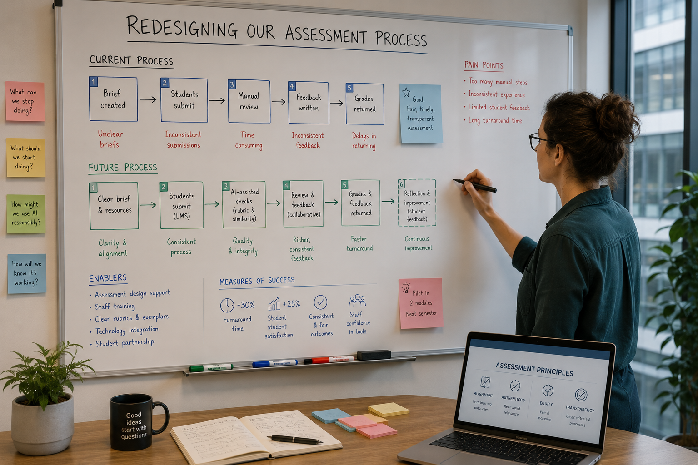

AI Fluency
Critically evaluating AI systems, adapting your practice, and helping shape how AI is used across an AI-enabled university.
Welcome to AI Fluency
In AI Literacy, we developed a shared understanding of Artificial Intelligence: what it is, how it works, and the opportunities, limitations and responsibilities associated with its use. In AI Competency, we moved from understanding to application — choosing appropriate tasks, providing context, collaborating with AI, critically evaluating outputs and retaining human responsibility.
AI Fluency takes us somewhere different.
This isn't an advanced prompting course. We're not going to teach you how to use every new AI tool — those tools will change. Instead, we're going to consider what it means to work, teach, research, and lead effectively in an environment where AI is increasingly embedded in everyday life.
AI fluency means being able to critically evaluate emerging technologies, adapt your practice, make informed decisions, and contribute to conversations about how AI should, and should not, be used.
More difficult questions
It also requires us to ask more difficult questions. Not simply:
The easy question
What can AI do?
But:
- What should AI do?
- What value does it create?
- What are the wider consequences of using it?
- What should remain human?
- What might we need to do differently?
- And perhaps most importantly: who gets to decide?
Throughout this course, there won't always be a single correct answer. Responsible AI involves navigating competing priorities and sometimes difficult trade-offs.
Innovation matters. So do privacy, accessibility, equity, sustainability, academic integrity, human wellbeing, and professional responsibility. AI fluency is the ability to navigate those tensions thoughtfully rather than simply accepting or rejecting technology.
Before we go further, which of these best describes what it means to be AI fluent?
- Knowing how to use advanced AI tools.
- Being able to write sophisticated prompts.
- Understanding enough about AI to critically evaluate and adapt your practice.
- Using AI frequently.
AI fluency, defined
AI fluency is the ability to critically, confidently and responsibly navigate, evaluate and shape practice in an AI-enabled environment. Only one of the four statements above really captures that — the other three describe familiarity with today's tools, not the judgement that carries you into tomorrow's.
Interactive activity: Where are you now?
Rate your confidence for each statement below from 1 (not confident) to 5 (very confident). We'll come back to this at the end of the course, so you can see what's changed.
Key messageWhat fluency really means
Fluency isn't about mastering today's technology. It's about developing the judgement to navigate tomorrow's.
Don't just question the output—question the technology
At competency level, we learned to critically evaluate AI-generated outputs. Fluency requires us to go further — we also need to evaluate the systems themselves.
When a new AI tool appears, it's easy to focus on what it can do. But capability is only one part of the picture. We should also ask:
- Who developed it?
- What problem is it designed to solve?
- What data might underpin it?
- How reliable is it?
- What happens to the information we provide?
- Can we understand how it reaches its conclusions?
- Who benefits from its use?
- Who might be disadvantaged?
- What resources are required to operate it?
- What happens when it gets something wrong?
- And do we actually need it?
AI systems are not immaterial. Behind every interaction are physical infrastructures: data centres, networks and specialised hardware. These require energy and resources, and some facilities require significant water for cooling.
These impacts vary considerably between systems, tasks, infrastructure and locations. This means that simple claims about the environmental cost of an individual AI interaction can be misleading. But it also means that environmental impact shouldn't be ignored. AI fluency requires us to consider the wider consequences of technology use alongside its immediate benefits.
It also requires us to resist both hype and fear. Neither "AI will solve everything" nor "AI will destroy everything" helps us make good decisions. We need evidence, experimentation, critical thinking, and professional judgement.
EduSmart AI
"Transform student success with AI! EduSmart predicts which students are at risk of failing with 94% accuracy and automatically recommends interventions."
Would you recommend SETU adopt it?
Decide for yourself, then reveal each fact in turn — and see whether your answer changes.
The company has not published its validation methodology.
Historical student data was used to train the system.
Performance differs between demographic groups.
Staff cannot see why individual students receive particular risk scores.
The system requires substantial processing of institutional student data.
The vendor provides little information about the environmental footprint of its infrastructure.
The vendor states that institutions remain responsible for decisions.
Reflection
What questions should we ask about AI before asking what it can do?
Key messageEvaluate the system, not just the output
AI fluency requires critical evaluation of systems, not simply their outputs.
Don't automate something just because we can
One of the easiest ways to use AI is to make existing processes faster. But fluency asks a more challenging question: should we be doing the same thing faster — or should we be doing something differently?

Those efficiencies can be valuable:
- Write the email faster.
- Summarise the report faster.
- Create the presentation faster.
- Analyse the feedback faster.
Consider assessment. If an assessment can now be completed almost entirely by Generative AI, we could spend considerable effort trying to prevent students from using it. Or we could return to the fundamental question: what learning are we actually trying to assess?
The same principle applies beyond teaching. If AI can automate part of an administrative process, perhaps the opportunity isn't simply to automate the existing workflow. Perhaps we should reconsider why the process exists, where friction occurs, and where human interaction provides genuine value.
There is also a sustainability dimension. Using AI to automate an inefficient process at scale may simply add another layer of technology and resource consumption to a process that needed redesigning in the first place.
Ask before you automate
Before asking how AI can improve a process, ask whether the process itself still serves its purpose. AI can become a catalyst for redesign rather than simply a tool for efficiency.
For each task, what's the right response? Then ask: if this approach were adopted across the university, what would the benefits and costs be — in time, quality, accessibility, workload, environmental resources and human experience?
An academic discovers that students can generate convincing responses to an existing essay using AI. Four responses are on the table:
A
Prohibit AI.
B
Introduce AI detection.
C
Retain the essay but require students to disclose AI use.
D
Revisit the learning outcomes and redesign the assessment.
Which response addresses the underlying issue — and what would each of the others cost you?
A and B treat the symptom — a new tool will beat detection again next term.
C manages disclosure, but a student can still comply without the essay measuring what it once did.
D is the only option that asks what the assessment was actually for, and redesigns it to still test that.
Read more
See the GenAI:N3 Assessment Redesign Framework for practical guidance on redesigning assessments.
Key messageAn opportunity to reconsider, not just speed up
The transformative potential of AI isn't simply doing existing things faster. It is giving us an opportunity to reconsider why and how we do them.
What should remain human?
As AI capabilities increase, the boundary between human and machine contribution becomes less obvious.
AI can already write, analyse, translate, generate images, produce code, and support complex decision-making. Increasingly, it can complete multi-step tasks. So where does that leave us?
One approach is to ask which tasks AI can replace. A more useful question is: where does human contribution create value?
Humans bring:
- Context.
- Experience.
- Ethical judgement.
- Empathy.
- Relationships.
- Accountability.
- Creativity grounded in lived experience.
- An understanding of organisational culture.
- And the ability to recognise when the technically efficient response isn't necessarily the right response.
AI may enhance some of these activities. But delegating a task isn't the same as delegating responsibility. Efficiency should also not become our only measure of value.
Sometimes the slower, human process is valuable precisely because it involves conversation, reflection, creativity, relationship-building or care. AI fluency means recognising those forms of value too.
For each activity, where should it sit? Think about consequence, ambiguity, empathy, ethics, contextual knowledge, relationships, and accountability.
Case study: The perfect response
A student sends an email explaining that they are experiencing significant personal difficulties. AI can produce an empathetic, professionally worded response in seconds.
Is producing the email the same as responding to the student?
Language versus relationship
There's a real difference between language that sounds empathetic and the genuine human relational responsibility of actually responding: noticing, following up, checking in, and being accountable for what happens next. AI can help write the words. It can't carry the relationship.
Key messageWhere human presence matters
The question isn't whether AI can perform a task. It is where human presence, expertise, relationships, and accountability matter.
Technology should follow purpose
New AI tools appear almost every day. Being fluent doesn't mean trying all of them. It means having a consistent way of evaluating them.

Before adopting an AI tool, consider the following.
Purpose
What problem are we trying to solve? Are we beginning with a genuine need, or a technology looking for a use?
Value
Does the tool meaningfully improve the task, experience or outcome?
Evidence
What evidence supports the claims being made? Has the system been independently evaluated?
Data & Privacy
What information does the system collect, process, or store? Where does that information go?
Equity
Who might benefit? Who might be disadvantaged? Could existing inequalities be reinforced?
Accessibility
Can everyone use the system? Does it remove barriers or introduce new ones?
Sustainability
What are the environmental implications? Could the benefit justify the resources — or could the same outcome be achieved more simply?
Integration
How does the tool fit with existing systems and workflows?
Risk
What happens if it fails? What is the consequence of an inaccurate or inappropriate output?
Oversight
Where does meaningful human review occur?
Continuity
What happens if the provider disappears, changes its terms, substantially increases its price, or withdraws the service?
AI relies on physical infrastructure that consumes energy and resources. Depending on the technology and location, water use, hardware requirements, and data storage may also be relevant. A small individual impact can become a much larger institutional consideration when multiplied across thousands of users and repeated activities — so sustainability should form part of technology evaluation from the beginning, not be considered after adoption.
Purpose first
Technology should follow purpose — not the other way around.
Tool A
Exceptional capabilities and highly impressive outputs, but unclear privacy arrangements and limited transparency about how institutional data are processed.
Tool B
Slightly less sophisticated, but secure, accessible, institutionally supported, and transparent about its data practices.
Tool C
Produces marginally better outputs than Tool B but requires significantly greater computational resources and is considerably more expensive.
Which would you recommend? Would "none of them" ever be a legitimate answer?
| Considered | Criterion | Question |
|---|---|---|
| Purpose | What problem are we trying to solve? Are we beginning with a genuine need, or a technology looking for a use? | |
| Value | Does the tool meaningfully improve the task, experience or outcome? | |
| Evidence | What evidence supports the claims being made? Has the system been independently evaluated? | |
| Data & Privacy | What information does the system collect, process, or store? Where does that information go? | |
| Equity | Who might benefit? Who might be disadvantaged? Could existing inequalities be reinforced? | |
| Accessibility | Can everyone use the system? Does it remove barriers or introduce new ones? | |
| Sustainability | What are the environmental implications? Could the benefit justify the resources — or could the same outcome be achieved more simply? | |
| Integration | How does the tool fit with existing systems and workflows? | |
| Risk | What happens if it fails? What is the consequence of an inaccurate or inappropriate output? | |
| Oversight | Where does meaningful human review occur? | |
| Continuity | What happens if the provider disappears, changes its terms, substantially increases its price, or withdraws the service? |
Key messageEvaluate, don't chase
Fluent users don't chase tools. They evaluate them against purpose, values, evidence, impact and risk.
When AI moves from answering to acting
Much of our early experience with Generative AI followed a simple pattern: we asked, AI responded. That model is changing.
AI agents can increasingly work towards goals, use tools, access information, and complete sequences of actions with less human intervention. Imagine asking AI not simply to draft an agenda, but to:
Review
Review previous meeting notes.
Identify
Identify outstanding actions.
Find
Find relevant documents.
Prepare
Prepare the agenda.
Draft
Draft briefing notes.
Distribute
Distribute the materials.
The important difference is agency. The AI isn't simply generating content — it is taking actions. That creates significant opportunities but also new questions about permissions, privacy, resource use, control, accountability, and oversight.
It also changes the sustainability question. One interaction may become dozens or hundreds of automated model calls occurring behind the scenes. As we evaluate agentic systems, we therefore need to understand not only what the system achieves, but the resources and actions involved in achieving it. Greater automation doesn't automatically mean greater efficiency.
More autonomy, more governance
As autonomy increases, good governance becomes more important, not less.
For each task, at what point would you require human approval? Does your answer change according to consequence?
Reflection
Key messageOversight matters more as autonomy grows
As AI gains greater agency, human oversight, clear boundaries, proportionality and accountability become increasingly important.
AI adoption is a people challenge
Introducing AI successfully isn't primarily a technology challenge. It's a people challenge.

Colleagues will approach AI from very different starting points. Some will be enthusiastic. Some will be anxious. Some will be sceptical. Some will feel overwhelmed. Some may worry that their expertise is becoming less valuable. And some will have legitimate concerns about privacy, academic integrity, sustainability, employment, accessibility, equity or the direction in which AI is developing.
Responsible leadership means creating space for these perspectives. It means neither dismissing concerns nor allowing unsubstantiated claims to determine our decisions. It means avoiding both pressure to adopt AI indiscriminately and resistance to exploring legitimate opportunities.
Good change begins with purpose:
- What problem are we trying to solve?
- Who is affected?
- Who needs to be involved?
- What support will people need?
- What concerns are legitimate?
- What evidence do we have?
- What are the wider consequences?
- How will we know whether the change has actually improved anything?
And importantly: have the people affected by the change had an opportunity to shape it?
A manager discovers an AI tool that could automate a significant part of their team's administrative workload. They announce that everyone will begin using it next month.
What's missing from this approach?
- Consultation.
- Needs analysis.
- Privacy review.
- Environmental impact.
- Accessibility.
- Training.
- Testing.
- Impact on roles.
- Workflow redesign.
- Success measures.
- Space for legitimate concerns.
Key messageWith people, not to them
Responsible AI adoption is something we do with people, not to them.
Who gets to shape AI?
AI is often presented as something happening to us. But the future of AI isn't predetermined — choices are being made every day about how these technologies are designed, deployed, and governed.

Those choices have consequences. AI systems can reproduce existing inequalities. Access to advanced technologies isn't equal. Some languages, cultures and perspectives are better represented than others. People with different levels of digital confidence may experience AI very differently.
The environmental consequences are also uneven. The infrastructure supporting AI exists somewhere. Energy is generated somewhere. Water and natural resources are consumed somewhere. Hardware is manufactured from physical materials and eventually becomes waste. The benefits and costs of AI are therefore not necessarily experienced by the same people or communities.
At the same time, AI can contribute to addressing complex environmental and societal challenges through research, modelling, optimisation, and innovation. This is why simple narratives about AI being either inherently good or inherently harmful are rarely sufficient. Responsible decision-making requires us to consider benefits, costs, trade-offs, and whose perspectives are represented.
Universities have an important role in this conversation. We don't simply prepare people to use technology. We create knowledge. We develop critical thinkers. We question assumptions. We contribute research and evidence. And we educate people who will help shape society.
AI fluency therefore isn't simply about individual productivity. It is also about participation: who gets to contribute to decisions about AI? Whose voices are missing? Who benefits? Who carries the risk? What resources are being consumed? And what kind of AI-enabled university do we want to create?
A university is developing a new institutional AI strategy. Participants currently include senior management, IT, academics and external technology consultants.
Who else should be involved?
- Students.
- PMSS colleagues.
- Researchers.
- Library staff.
- Accessibility and disability expertise.
- Sustainability expertise.
- Data protection.
- International students.
- Different disciplines.
- Colleagues with low AI confidence.
Key messageA collective responsibility
AI is not just something we use. We have a collective responsibility to consider its human, social and environmental consequences, and to shape its use accordingly.
What does this mean in your context?
AI fluency doesn't end with individual capability. A university becomes AI fluent when people can share expertise, question practice, experiment safely, and learn from one another.

That requires collaboration across traditional boundaries:
- Academic and professional services.
- Different disciplines.
- Staff and students.
- Technology specialists and educators.
- Researchers and practitioners.
- Sustainability and accessibility expertise.
- Leadership and those delivering services every day.
No single person has all the answers. And in a field changing this quickly, nobody ever will. Collective capability is therefore more powerful than individual expertise. It also allows us to recognise consequences that may be invisible from one perspective:
- An apparently excellent technical solution may create an accessibility problem.
- An efficient administrative solution may create a poor human experience.
- An innovative teaching tool may introduce privacy concerns.
- A highly capable AI system may consume considerably more resources for only marginal additional benefit.
Bringing different perspectives together helps us make better decisions.
Interactive activity: Your sphere of influence
Consider three levels, and record one action or question at each.
Key messageFluency grows through collaboration
AI fluency grows through collaboration, experimentation and shared learning — not individual expertise alone.
Redesign, don't just automate
Choose one genuine aspect of your professional practice — a process, an assessment, a service, a communication activity, a research workflow, a student experience, or a recurring administrative task.

Don't begin by asking: how could AI do this? Begin with the purpose.
Purpose
Why does this activity exist? What outcome are you trying to achieve?
Experience
Who is involved? What currently works? Where are the barriers or frustrations?
Possibility
Could AI create meaningful value? Could it enable an entirely different approach?
Humanity
Where are human expertise, relationships, empathy, creativity, and judgement essential?
Equity & Accessibility
Who benefits from the proposed change? Who might be excluded or disadvantaged? Could AI remove existing barriers — or create new ones?
Sustainability & Proportionality
What resources would the proposed approach require? Does the value created justify the use of AI? Could the same outcome be achieved more simply? What happens if this is adopted at scale — hundreds or thousands of repeated interactions, not just one?
Risk
What could go wrong? What happens when the AI is inaccurate? What are the privacy, ethical, professional or reputational implications?
Redesign
Develop your revised approach. AI may play a significant role. A small role. Or no role at all.
Evaluate
How would you know whether your redesigned approach is actually better? Consider quality, human experience, time, accessibility, equity, sustainability, cost, learning and professional judgement.
The final question
If AI disappeared tomorrow, would this redesign still have taught you something useful about your practice? If the answer is yes, you've moved beyond simply adopting technology — you've used AI as a catalyst for critical reflection and improvement.
Record briefly
Key messageJudged by the quality of the decision
Fluency is demonstrated not by how much AI you introduce, but by the quality of the decisions you make about change.
Continuing the journey
You've now completed the three stages of the AI at SETU learning journey. AI Literacy helped you understand AI. AI Competency helped you work effectively with AI. AI Fluency has asked you to critically evaluate, adapt, and shape practice in an AI-enabled environment.
But AI fluency isn't something you complete. Technology will continue to change. New models will emerge. Capabilities that seem remarkable today will become ordinary. New opportunities will appear. So will new challenges.
Remaining fluent doesn't require keeping up with every development. It requires something more sustainable:
- Curiosity.
- Critical thinking.
- Professional judgement.
- A willingness to experiment.
- An ability to question.
- An awareness of wider human and environmental impacts.
- And an openness to learning with others.
Responsible AI isn't about maximising AI use. Nor is it about avoiding AI because it has risks. It is about making informed and proportionate decisions. Sometimes AI may provide significant educational, professional, accessibility, research, or societal benefits that justify the resources involved. Sometimes a simpler technology — or no technology at all — may be the better choice. AI fluency means being capable of making that distinction.
Our aim at SETU isn't to predict exactly what AI will become. It is to ensure that our people have the confidence, knowledge and agency to respond thoughtfully as it evolves. The future of AI in higher education isn't simply something that will happen to us. We have a role in shaping it.
Rate yourself again
Final reflection
Return to the beginning of the entire learning journey and ask yourself:
Final key message
- Understand the technology.
- Use it with judgement.
- Question its impact.
- Consider its costs as well as its benefits.
- Keep people at the centre.
- Help shape what comes next.
You've completed the programme
AI Literacy → AI Competency → AI Fluency. That's the full arc of SETU's GenAI programme — but fluency itself doesn't end here. It continues in how you practise, question and collaborate from now on.
Well done.
You've completed AI Fluency — the third and final course of SETU's GenAI programme. You've practised questioning AI systems, rethinking practice rather than just automating it, judging where human presence matters, evaluating emerging tools, weighing autonomy and oversight, leading responsible change, and considering AI's wider equity and sustainability implications.
Download your certificate of completion
Enter your name as you'd like it to appear, then preview or download your certificate (save as PDF, or print).
Your name stays on this device — it is only used to generate the certificate.
Where next
You've now completed all three courses in SETU's GenAI programme. Fluency isn't a destination — it's an ongoing practice of curiosity, critical thinking and collaboration.
Developed by the Centre for Academic Practice, based on a course development script created by Dr Hazel Farrell. The course was built using Claude Code, with images generated using ChatGPT.